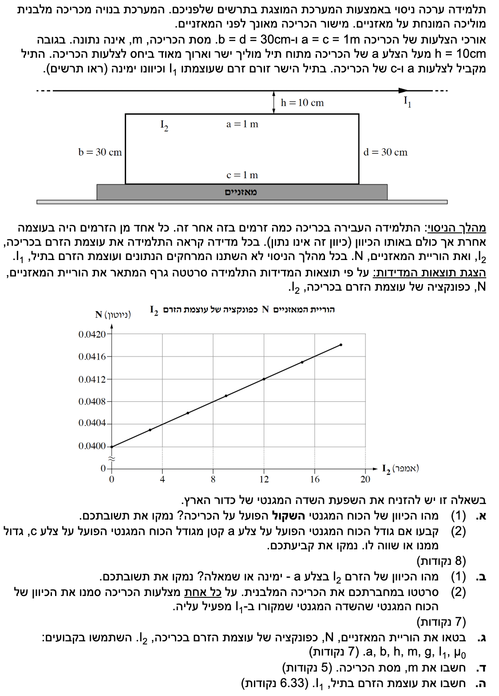

שלום תלמידים יקרים! לפנינו שאלה קלאסית המשלבת כוחות מגנטיים, שדות מגנטיים של תילים ומכניקה (שיווי משקל). נעבור על השלבים בצורה מסודרת, שלב אחר שלב. שימו לב לחוקי ניוטון ולכללי יד ימין שאנחנו מיישמים.

[תמונת השאלה המקורית]לא נמצאה תמונה בשם question-image.png באותה תיקייה.
סעיף א' (1)
מה נתון: מערכת הכוללת תיל ישר ארוך ומתחתיו כריכה מלבנית המונחת על מאזניים.
נתון גרף המתאר את הוריית המאזניים \( N \) (כוח נורמלי) כפונקציה של עוצמת הזרם בכריכה \( I_2 \).
אנו רואים מהגרף שכאשר הזרם \( I_2 \) גדל, גם הוריית המאזניים \( N \) גדלה.
מה מחפשים: לקבוע מהו הכיוון של הכוח המגנטי השקול הפועל על הכריכה (למעלה או למטה) ולנמק.
נוסחאות ועקרונות בשימוש: \( \Sigma F_y = m a_y = 0 \) (החוק הראשון של ניוטון עבור גוף במנוחה).
פתרון צעד-אחר-צעד:
נשרטט תרשים כוחות (FBD) עבור הכריכה המונחת על המאזניים. נבחר ציר \( y \) חיובי כלפי מעלה.
נרשום את משוואת הכוחות עבור הכריכה (נניח ציר y חיובי כלפי מעלה):
\[ \Sigma F_y = N - m g - F_B = 0 \]
\[ N = m g + F_B \]
על פי הנתונים, אנו רואים כי ככל שהזרם \( I_2 \) גדול יותר, הוריית המאזניים \( N \) גדלה. משמעות הדבר היא כי הכוח המגנטי השקול \( F_B \) פועל מטה, באותו כיוון של כוח הכבידה, ולוחץ את הכריכה אל המאזניים.
מסקנה: כיוון הכוח המגנטי השקול הוא כלפי מטה.
טיפ מורה:
הוריית המאזניים היא בעצם הכוח הנורמלי (N) שהמשטח מפעיל על הגוף. אם מאזניים מראים מספר גבוה יותר ממשקל הגוף, משמע משהו "דוחף" את הגוף חזק יותר אל המאזניים.
סעיף א' (2)
מה נתון:
אורך הצלעות: מטר אחד במערכת ה-MKS לכן נציב \( a = c = 1\text{ m} \).
המרחק של צלע \( a \) מהתיל הוא \( h = 10\text{ cm} \). נמיר מיד ליחידות MKS: \( h = 0.1\text{ m} \).
המרחק של צלע \( c \) מהתיל הוא \( h + b = 10\text{ cm} + 30\text{ cm} = 40\text{ cm} \). נמיר: \( h+b = 0.4\text{ m} \).
מה מחפשים: לקבוע האם גודל הכוח המגנטי הפועל על צלע a קטן, גדול או שווה לגודל הכוח המגנטי הפועל על צלע c, ולנמק.
נוסחאות ועקרונות בשימוש: \( \frac{F}{L} = \frac{\mu_0 I_1 I_2}{2\pi d} \) (כוח ליחידת אורך בין שני תילים מקבילים)
פתרון צעד-אחר-צעד:
נשתמש בנוסחה לגודל הכוח בין שני תילים ארוכים ומקבילים (כאשר \( L \) הוא אורך הצלע, ו-\( d \) הוא המרחק בין התילים):
\[ F = \frac{\mu_0 I_1 I_2 L}{2\pi d} \]
מהנוסחה אנו רואים כי גודל הכוח המגנטי נמצא ביחס הפוך למרחק בין התילים (\( d \)). ככל שהמרחק קטן יותר, כך הכוח גדול יותר.
מכיוון שצלע a קרובה יותר לתיל לעומת צלע c, והזרם ואורך הצלע בשתיהן זהים, הכוח עליה בהכרח גדול יותר.
מסקנה: גודל הכוח המגנטי הפועל על צלע a גדול מזה הפועל על צלע c.
טיפ מורה:
הנוסחה מופיעה במפורש בדף הנוסחאות! שימו לב שהיא נתונה ככוח ליחידת אורך (\( \frac{F}{L} \)). כדי למצוא את הכוח הכולל על צלע באורך \( L \), פשוט מכפילים את שני אגפי המשוואה ב-\( L \).
סעיף ב' (1)
מה נתון: זרם \( I_1 \) בתיל הישר והארוך זורם ימינה (לפי התרשים).
מסעיף קודם אנו יודעים שהכוח המגנטי השקול פועל כלפי מטה, כלומר התיל דוחה את צלע a הדומיננטית.
מה מחפשים: מהו כיוון הזרם \( I_2 \) בצלע a (ימינה או שמאלה) ולנמק.
נוסחאות ועקרונות בשימוש: כוח בין תילים (זרמים באותו כיוון נמשכים, זרמים מנוגדים נדחים)
פתרון צעד-אחר-צעד:
מצאנו בסעיף א' שהכוח המגנטי השקול על הכריכה פועל כלפי מטה. מכיוון שצלע a היא הקרובה ביותר לתיל, הכוח שפועל עליה חזק יותר מהכוח על צלע c, והוא זה שקובע את כיוון הכוח השקול. לכן, ניתן להסיק שהתיל הישר דוחה את צלע a (מפעיל עליה כוח כלפי מטה).
על פי העיקרון הפיזיקלי עבור כוחות בין תילים מקבילים: כוח דחייה נוצר כאשר הזרמים בשני התילים זורמים בכיוונים מנוגדים. מכיוון שהזרם בתיל \( I_1 \) זורם ימינה, הזרם בצלע a חייב לזרום בכיוון ההפוך.
מסקנה: כיוון הזרם \( I_2 \) בצלע a הוא שמאלה.
טיפ מורה:
השימוש בעיקרון ש"זרמים מנוגדים נדחים וזרמים מקבילים נמשכים" חוסך לנו את הצורך להשתמש פעמיים בכלל יד ימין (פעם למציאת כיוון השדה ופעם למציאת כיוון הכוח). זהו "קיצור דרך" אלגנטי ומוכר בבגרויות!
סעיף ב' (2)
מה נתון: זרם בצלע a זורם שמאלה. מכיוון שזו כריכה אחת סגורה, כיוון הזרם חייב להישמר לאורך כל המלבן (נגד כיוון השעון).
מה מחפשים: לסרטט את הכריכה, לסמן את כיוון הזרם ולסמן על כל צלע את כיוון הכוח המגנטי שהשדה של \( I_1 \) מפעיל עליה.
פתרון צעד-אחר-צעד:
מכיוון שהזרם בצלע a (העליונה) זורם שמאלה, הזרם במעגל הסגור ממשיך כך: בצלע b (השמאלית) יורד מטה, בצלע c (התחתונה) זורם ימינה, ובצלע d (הימנית) עולה מעלה.
קביעת כיוון השדה המגנטי: עלינו לקבוע מהו כיוון השדה שיוצר התיל העליון \( I_1 \) באזור בו נמצאת המסגרת. לפי כלל יד ימין הראשון (עבור תיל ישר נושא זרם): נכוון את אגודל יד ימין בכיוון הזרם בתיל (ימינה). שאר האצבעות יקיפו את התיל ויראו את כיוון קווי השדה המעגליים. כאשר האצבעות יורדות לאזור שמתחת לתיל (היכן שנמצאת המסגרת), הן חודרות פנימה אל תוך הדף. לכן נסמן את כיוון השדה באזור המסגרת כ- \( \otimes \).
כעת, נפעיל את כלל יד ימין השני (לכוח מגנטי) למציאת כיוון הכוח על כל צלע:
צלע a: כוח מטה (דחייה, זרמים מנוגדים). כוח חזק.
צלע c: כוח מעלה (משיכה, זרמים מקבילים). כוח חלש יותר.
צלע b (שמאלית): זרם מטה \( \downarrow \), שדה פנימה \( \otimes \). לפי כלל יד ימין, הכוח פועל ימינה (לתוך הכריכה).
צלע d (ימנית): זרם מעלה \( \uparrow \), שדה פנימה \( \otimes \). לפי כלל יד ימין, הכוח פועל שמאלה (לתוך הכריכה). הכוחות על צלעות b ו-d שווים בגודלם ומנוגדים בכיוונם, ולכן מבטלים זה את זה.
התרשים לעיל מציג את כיווני הזרם והכוחות על כל צלע כנדרש.
סעיף ג'
מה נתון: אנו נדרשים לפתח ביטוי. נשתמש בקבועים: \( a, b, h, m, g, I_1, \mu_0 \) והנעלם \( I_2 \).
מה מחפשים: לבטא את הוריית המאזניים \( N \) כפונקציה של זרם הכריכה \( I_2 \).
\[ N - mg - F_{net} = 0 \quad \Rightarrow \quad N = mg + F_{net} \]
הכוח המגנטי השקול \( F_{net} \) מורכב מההפרש בין הכוח מטה על צלע a והכוח מעלה על צלע c (הכוחות על הצלעות הצדדיות מבטלים זה את זה). גודל הכוח השקול (שכיוונו מטה) הוא:
\[ F_{net} = F_a - F_c \]
נשתמש בנוסחת הכוח בין שני תילים מקבילים. נציב את נתוני הבעיה (נזכור ש- \( L = a = c \) לפי הנתון):
מסקנה:
\( N = m g + \left[ \frac{\mu_0 I_1 a}{2\pi} \left( \frac{1}{h} - \frac{1}{h+b} \right) \right] \cdot I_2 \)
טיפ מורה:
שימו לב שקיבלנו פונקציה ליניארית מהצורה \( y = A + B \cdot x \). ציר ה-y הוא N, ציר ה-x הוא \( I_2 \). החיתוך עם ציר y הוא \( mg \), והשיפוע הוא הביטוי המורכב בסוגריים המרובעים. זה מתאים בדיוק לגרף הישר שניתן בשאלה!
סעיף ד'
רגע של לימוד: משמעות ה"גלים" בציר הגרף
לפני שניגש לחישוב, בואו נתעכב על פרט ויזואלי בגרף. בתחתית הציר האנכי (ציר ה- N) מופיע סימן של מעין גלים קטנים (זיגזג). סימן זה נקרא קטיעת ציר או דילוג על ערכים.
למה אנו זקוקים לו? כל הערכים שנמדדו בניסוי מתרכזים בטווח צר בין \( 0.0400 \) ל- \( 0.0416 \) ניוטון. אם היינו משרטטים את כל הציר בקנה מידה אחיד ממש מאפס, הגרף היה נראה כמו קו שטוח ודחוס הרחק למעלה, והיה בלתי אפשרי לקרוא ממנו ערכים או לחשב שיפוע במדויק. סימן הקטיעה מראה ש"דילגנו" על האזור הריק שבין אפס ל- \( 0.0400 \) כדי שנוכל לעשות 'זום-אין' ולהגדיל את האזור שבו באמת קורה השינוי הפיזיקלי. לכן נראה שהמרחק מאפס ל- \( 0.0400 \) קטן ולא פרופורציונלי להמשך הציר - זו אינה טעות, אלא דרך חכמה ונוחה להציג נתונים ממוקדים!
מה נתון:
מהגרף ניתן לקרוא נקודות. נבחין בנקודת החיתוך עם ציר ה-y (כאשר \( I_2 = 0 \)):
הנקודה היא \( (0, 0.0400) \). כלומר, כאשר \( I_2 = 0\text{ A} \), מתקיים \( N = 0.0400\text{ N} \).
תאוצת הכובד היא תמיד חיובית בחישובי גודל: \( g = 10\text{ m/s}^2 \).
מה מחפשים: לחשב את מסת הכריכה \( m \).
נוסחאות ועקרונות בשימוש: \( N(0) = m g \)
חישוב:
על פי הביטוי מסעיף ג', כאשר נציב \( I_2 = 0 \), האיבר המגנטי מתאפס ונקבל:
\[ N(0) = m \cdot g \]
נציב את הערך מהגרף ואת תאוצת הכובד \( g = 10 \):
\[ 0.0400 = m \cdot 10 \]
\[ m = \frac{0.0400}{10} = 0.004\text{ kg} \]
מסקנה: מסת הכריכה היא \( m = 4.00 \times 10^{-3}\text{ kg} \) (או \( 4\text{ g} \)).
טיפ מורה:
נקודת החיתוך עם ציר ה-y מייצגת את המצב הפיזי בו טרם הזרמנו זרם בכריכה. במצב זה הכוח היחיד שדוחף את הכריכה כלפי מטה אל עבר המאזניים הוא כוח הכובד.
סעיף ה'
מה נתון: מהגרף ניתן לחשב שיפוע. נבחר שתי נקודות מדויקות היושבות על ההצטלבויות של הרשת:
נקודה 1: \( (0, 0.0400) \)
נקודה 2: \( (16, 0.0416) \)
ערכים גאומטריים: \( a = 1\text{ m}, h = 0.1\text{ m}, h+b = 0.4\text{ m} \).
קבוע פרמיאביליות הריק: \( \mu_0 = 4\pi \times 10^{-7}\text{ T}\cdot\text{m/A} \).